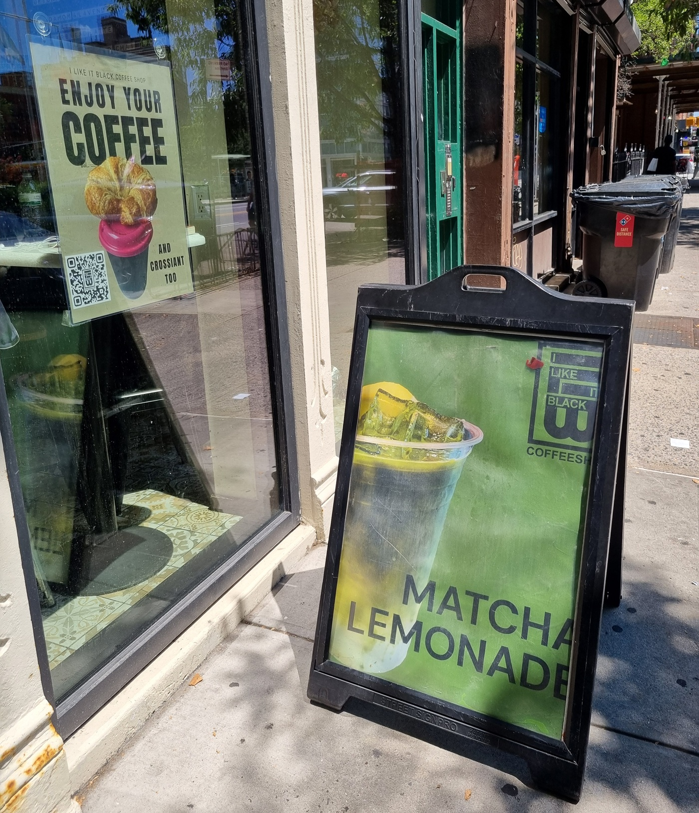
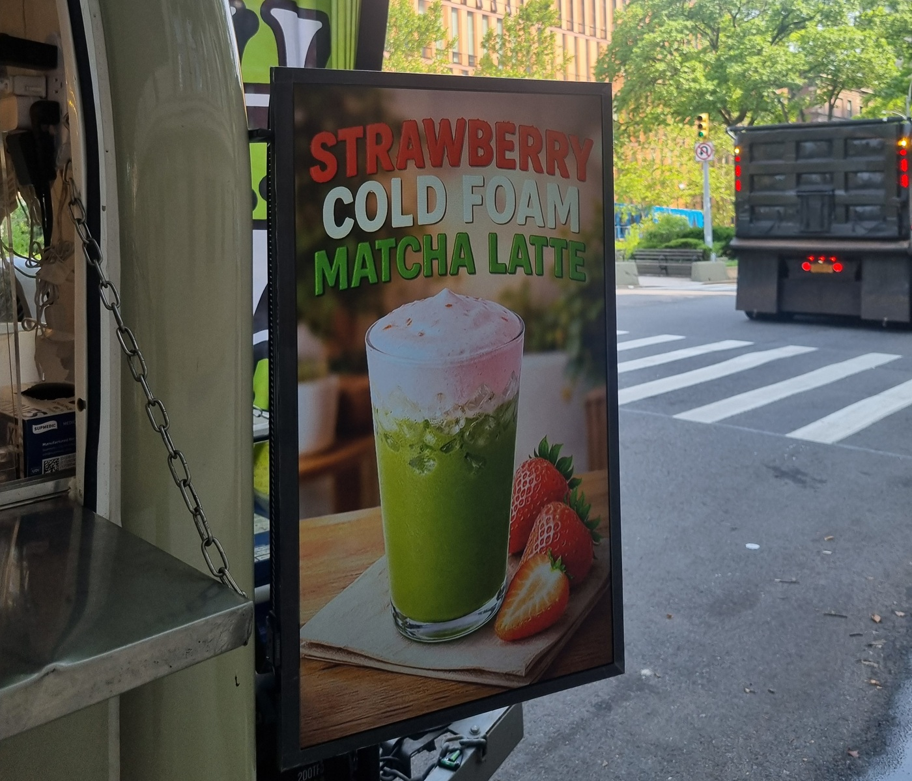
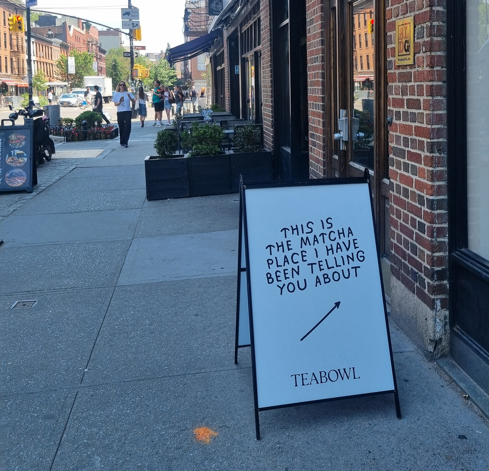

The Matcha Green Line of Manhattan
From bodegas to baristas: the Wellness Coffee Culture as
a symptom of Harlem gentrification.
From bodegas to baristas: the Wellness Coffee Culture as
a symptom of Harlem gentrification.
Fed up with Pilates girls sipping their 9-dollars matcha lattes every day on Instagram? Popularized by Starbucks in the mid-2000s, this pale green wellness drink has achieved phenomenal success thanks to social media. From strawberry matcha and matcha cookies to matcha-infused skincare, the trend is now massive - so vast that Japan can hardly keep up with the global demand. Increasingly, what you’re actually eating or drinking isn't always real matcha; it's probably basic green tea. Or worse, an unidentified powder that’s been artificially colored and flavored. It is at least so in Europe, so far.

When I moved to Harlem a few weeks ago, I assumed there would be dozens of lovely, plant-filled coffee shops, with digital nomads glued to their laptops. I expected the handwritten menus on the wall to feature avocado toasts, cold brew and, of course, matcha latte or any kind of latte, as long as it's non-dairy, please. That's what I call «the wellness coffee culture». I had watched and read stories in the media deploring the neighborhood’s gentrification of Harlem, and expected the wellness coffee culture to be a tell-tale symptom. Along with yoga and pilates studios and citi bikes stations. The reality, however, was a bit less cliché.

So, the truth. Before flying from Switzerland to New York, I googled the street where I was going to stay and the streets around, in search of a nice third place. I luckily noticed Mushtari, 4 minutes walk from my flat, serving coffee and pastries in the middle of a plant shop. How nice! Among other locations, the Monkey Cup seemed to be popular, as well as the Copper Leaf Bakery. But there weren't all that many of them.
Let’s see what Google says.While this map is likely not exhaustive, it demonstrates that gentrification is primarily concentrated in West Harlem (and extending into the Upper West Side) and Central Harlem around 125th Street and Malcolm X boulevard. A quick overview of rental prices in these areas points to clear evidence of gentrification, with a notable shift following the pandemic. East Harlem, meanwhile, remains on the periphery, having historically been the neighborhood's most economically vulnerable area.

Most of these lifestyle coffee shops opened after the pandemic, specifically from 2022 onwards. Only The Monkey Cup and the Double Dutch Espresso predate this trend (established in 2015 and 2014, respectively); they stand as a testament to the resilience of their founders with a passion for coffee and community. The owners come from diverse backgrounds, with more than half identifying as Latino or Afro-descendant.
Meanwhile, incomes are rising in Harlem, just as they are across the rest of Manhattan, but the distribution has changed. In Central Harlem, in 2000, 30% of households had an annual income of less than $20,000, while only 17.2% of households earned over $100,000. As you can see in the chart below, things have changed significantly over the last 20 years. Today, the household income group with the largest share (25.2%) earns between $100,000 and $250,000, with another 9% earning even more.
Actually, pretty much everyone on the street is drinking iced coffee, and not matcha. Most of the time, it’s out of a Dunkin’ Donuts cup! The company has 169 locations across the five boroughs, including at least 14 in Harlem. Some of which are open 24h a day. Gentrification, however, is a reality. It can be measured by rent increases, but also by the diversity of the population. While white residents accounted for only 2.1% of the population in 2000, they now make up 17.1% (2024, NYU Furman Center; see the chart below). This remains a relatively small percentage. The Black population was 77.3% in 2000 and is now 43.2%. Today, however, the population is largely a mix of Black and Latino residents, who together represent 74.3% of the total population in Central Harlem.
The «matcha green line» is certainly making its way over from Midtown, the Village or Soho, gently taking over Harlem one cup at a time. From Starbucks, Dunkin' Donuts, or Joe Coffee, to family-owned cafés designed for Instagram, everyone now offers matcha on their menu. But for now, it’s more of a whisper.
